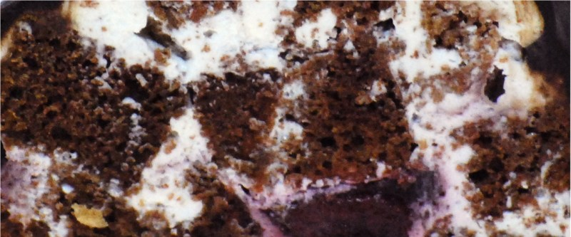

приготовление:
-
Приготовить 1 порцию теста по рецепту шоколадного бисквита.
-
Противень застелить пергаментом, при необходимости слегка смазать маслом. Вылить тесто на противень и поставить в духовку, разогретую до 175 °C.
-
Выпекать примерно 30–40 минут. Первые 25 минут духовку не открывать вообще. Затем начинать проверять готовность деревянной шпажкой — время может варьироваться в зависимости от духовки.
-
Готовый корж полностью остудить и нарезать на кубики размером примерно 3×3 см. Корж можно приготовить заранее и хранить в плёнке в холодильнике.
-
Для крема взбить 750 г сметаны 30% со 150 г сахарной пудры и ванильным экстрактом до однородности.
-
Собрать торт. В идеале каждый кусочек коржа обмакнуть в сметанный крем и выкладывать горкой, по желанию добавляя вишню между слоями. Как упрощённый вариант — выложить слой кусочков коржа, залить частью крема, затем снова слой коржа и крема, формируя горку.
-
Приготовить 1½ порции глазури.
-
Полить торт глазурью. Готовый торт обязательно поставить в холодильник на ночь — это важно для хорошей пропитки и стабилизации.